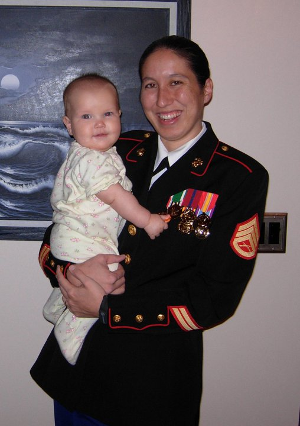

Jennifer Wright

SUMMARY OF QUALIFICATIONS
- Active U.S government TS/SCI clearance
- 10 years logistics and MAGTF plans experience (MOS 0511 & 0431)
- 10 years experience as a Systems Engineer
- 7 years experience as a Project Manager
- Certified Scrum Master (Aug 2022)
- Excellent organizational, interpersonal, and communication skills. Committed to timeliness and professionalism. Willingness to work above and beyond the stated requirements with the capacity to learn new methods and technologies that may be required to perform at a high level.
- Experience in the use of the following programs: DOORs, HPQC, SPA, RTAMMS, JOPES, MDSS II, JFRG II, AALPS, ICODES, SMS, GTN, ADO, JIRA, Confluence, Windows Office and Share Point
EXPERIENCE
2016 - Present, Project Manager, SAIC
- Manage the full software lifecycle for several programs utilizing both Waterfall and Agile methodologies for sustainment, enhancement, and modernization.
- Create project plans to fit stakeholder and customer needs and deliver product with-in budget.
- Perform project tracking through clear and concise status reports and time management reports; proactively identify issues and risks, and track project progress against planned schedule.
- Identify and recommend both process, functional, and technical improvements to positively impact current and future project budget or schedule.
- Developed tool to facilitate the ordering of cloud accounts from an external organization, reducing both errors and turnaround time.
- Assist team in defining and adhering to program standards and best practices.
- Serve as primary point of contact for all Cloud One Zone C customers not assigned to the sustainment group; brief & coordinate onboarding, support creation and provisioning of landing zones in 4 CSPs (AWS, Azure, GCP, OCI), and liaise with O&S and engineering teams to execute tickets submitted by customer.
- Manage all Cloud One brokered accounts; support customer acquisition of accounts, create roles and admin accounts, liaise with customer & CSPs to ensure customer needs are met.
2013 - Present, Systems Engineer, SAIC
- Liaison between the internal project management, development team and the client in support of three DoD IT manpower systems.
- Track and manage customer engineering change requests; facilitate initial bid and estimation of new work by scoping the level of effort with the internal inter-disciplinary team.
- Coordinate and facilitate requirements working groups with government stakeholders to identify customer needs, gather business processes, business rules, and system requirements.
- Performed analysis of business and user needs, determining of new requirements, or revising existing requirements as necessary. Authored thousands of system requirements specifications (SRS), delivery and management of SRS’ using requirements management tools such as: Application Lifecycle Management (ALM) and IBM Dynamic Object Oriented Requirements Management System (DOORS).
- Contributor and participant in system engineering reviews, test and training documentation.
- Develop and execute functional test cases, collaborated with developers and customers to ensure test planning adheres to the proper requirements.
- Review new technology insertion recommendations to ensure compatibility with existing software.
- Implement effective internal processes and review procedures for ensuring high quality deliverables.
- Present formal and informal briefs and facilitate workgroups.
2012 - Deployment Support Specialist, TASC
2004 - 2011, MAGTF Planner/Logistics Embarkation Specialist, USMC (Cpl - SSgt)
EDUCATION
- U.S. Marine Corps Specialized Training: HAZMAT Materials Preparer (2009), Aircraft Planners (2007), Logistics/Embarkation NCO Course (2008)
- MAGTF Planner Course (2004)
- South Lake Tahoe Community College (2002) AA degree in Computer Science
AWARDS
- Navy and Marine Corps Commendation Medal (2)
- Sea Service Deployment Ribbon (3)
- Good Conduct Medal (3)
REFERENCES